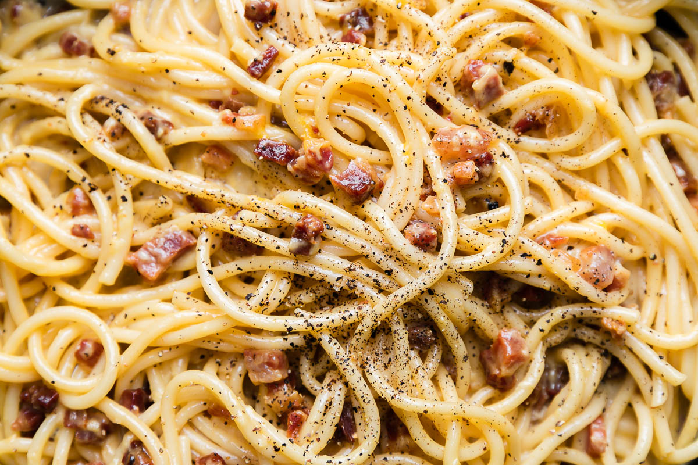

Carbonara

A delicous plate of carbonara
Carbonara is an Italian pasta dish from Rome made with eggs,
hard cheese, cured pork and black pepper. The dish arrived
at it's modern form, with its current name, in the middle
of the 20th century.
The cheese is usually Pecorino Romano, Parmigiano-Reggiano,
or a combinatio of the two. Spaghetti is the most common
pasta, but fettuccine, rigatoni, liguine, or bucatini are
also used. Normally guanciale or pancetta are used for the
meat component, but lardons of smoked bacon are a common
substitute outside of italy
Ingredients
- Pecorino Romano
- Parmigiano-Reggiano
- pancetta
- eggs
- olive oil
- garlic
- bucatini
- salt and pepper
Instructions
- Put a large pot of salted water on to boil
- Heat olive oil in large saute pan over medium heat
- Add pancetta and cook slowly until edges brown
- Add garlic to pan and cook for another minute and then
remove from heat
- In a small bowl, beat the eggs and mix in half of the cheese
- When water has reached a rolling boil, add the dry pasta
and cook
- When the pasta is al dente, reserve some pasta water for
later and combine with pancetta and garlic. Allow to cool
slightly
- Add beaten eggs and cheese and toss quickly
- Add additional pasta water and salt to taste
- Serve with rest of cheese and gresly ground black pepper